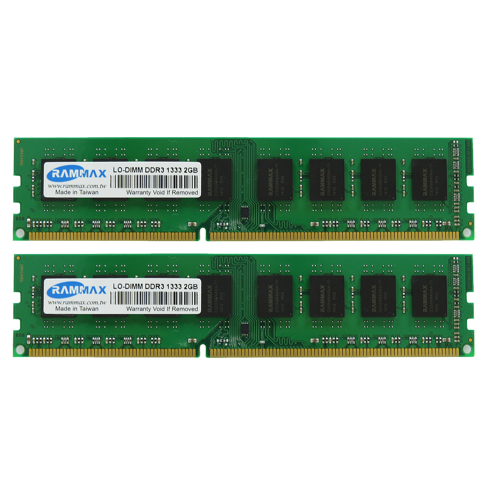

|
|
| FORM PEMBELIAN KOMPUTER DISINI!! |
RAM DDR3
|
RAM DDR3 (Double Data Rate Type 3) adalah generasi ketiga dari memori akses acak dinamis (RAM) yang digunakan untuk menyimpan data sementara yang dibutuhkan oleh CPU dalam menjalankan aplikasi. DDR3 memiliki kemampuan untuk mentransfer data dua kali lebih cepat dibandingkan dengan pendahulunya, DDR2, karena menggunakan clocking yang lebih tinggi dan frekuensi yang lebih cepat, biasanya antara 800 MHz hingga 2133 MHz. RAM ini juga menggunakan daya yang lebih rendah, sekitar 1.5 volt, dibandingkan dengan DDR2 yang membutuhkan 1.8 volt. Hal ini membuat DDR3 lebih hemat daya dan menghasilkan lebih sedikit panas, sehingga lebih efisien untuk perangkat yang memerlukan konsumsi energi yang lebih rendah. DDR3 banyak digunakan di berbagai perangkat komputer, termasuk desktop, laptop, dan server, hingga akhirnya digantikan oleh generasi berikutnya seperti DDR4. Selain kecepatan dan efisiensi daya, RAM DDR3 juga memiliki latensi yang lebih rendah, yang berarti waktu tunggu data yang dikirim ke prosesor lebih singkat, sehingga meningkatkan performa keseluruhan sistem. Namun, dengan perkembangan teknologi yang pesat, DDR3 sudah tidak digunakan dalam perangkat baru karena sudah digantikan oleh teknologi yang lebih canggih seperti DDR4 dan DDR5 yang menawarkan performa lebih tinggi dan konsumsi daya yang lebih rendah. |
 |